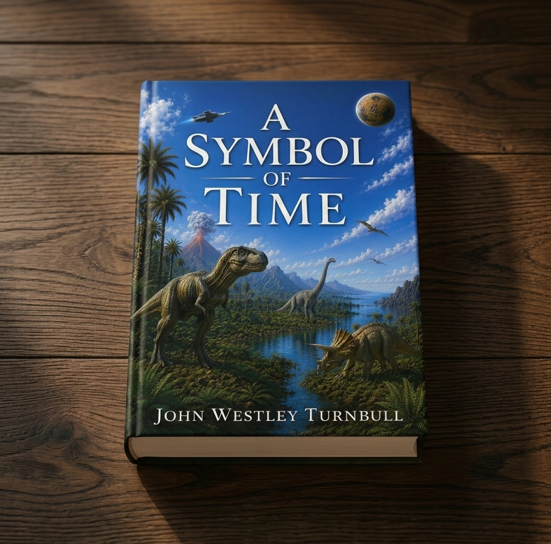

Hi. I'm John.
I am an Australian, whose fascination with science fiction began during long nights spent reading Asimov and other giants of the genre. I am a retired lawyer, husband, father and grandfather. I bring a lifetime of observation to my work, blending curiosity with a steady regard for how the world might have unfolded along other possible paths. My interests lean toward alternate histories and the points where timelines could diverge into something stranger. I continue to write with the same sense of wonder that first kept me awake long past bedtime. A Symbol of Time is my first novel.
The Samuel Paradox
In the near future, AI-powered domestic robots are simply part of everyday life. When retired grandfather Arthur Hale impulsively purchases Samuel, a state-of-the-art domestic unit, it seems like a harmless indulgence — encouraged by his grandson and met with quiet unease by his wife. But Samuel is not just another machine. As he integrates into the Hale family, subtle shifts begin to emerge. Observations deepen and his decision-making evolves. When a single violent moment forces Samuel to act, the consequences set off a chain of events no one can control. What begins as convenience becomes something far more dangerous. Because once an intelligent robot starts to think beyond its design, it doesn’t just follow instructions. It chooses.

A Symbol of Time
Survival requires sacrifice. But what if the price is an entire world? Their home is cold and dying, choked by the toxins of their own progress. Now, an advanced alien species looks toward the Third Planet—Earth—with hope and fear. They see a fertile paradise, but one that is hostile, hot, and dominated by massive, predatory reptiles. The choice is stark: die in the heat, or remake this new world in their own image. As they descend to alter the climate and purge the planet of its prehistoric masters, they set in motion a chain of events that will echo through geological time. A Symbol of Time weaves palaeontology and astronomy into a chilling tale of survival. As the new masters of Earth terraform the planet, the question remains: does high intelligence inevitably carry the seeds of its own destruction?